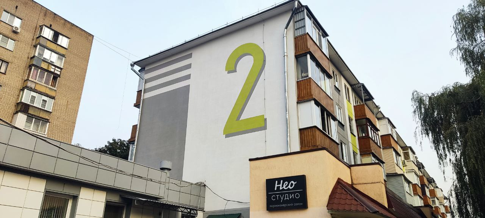
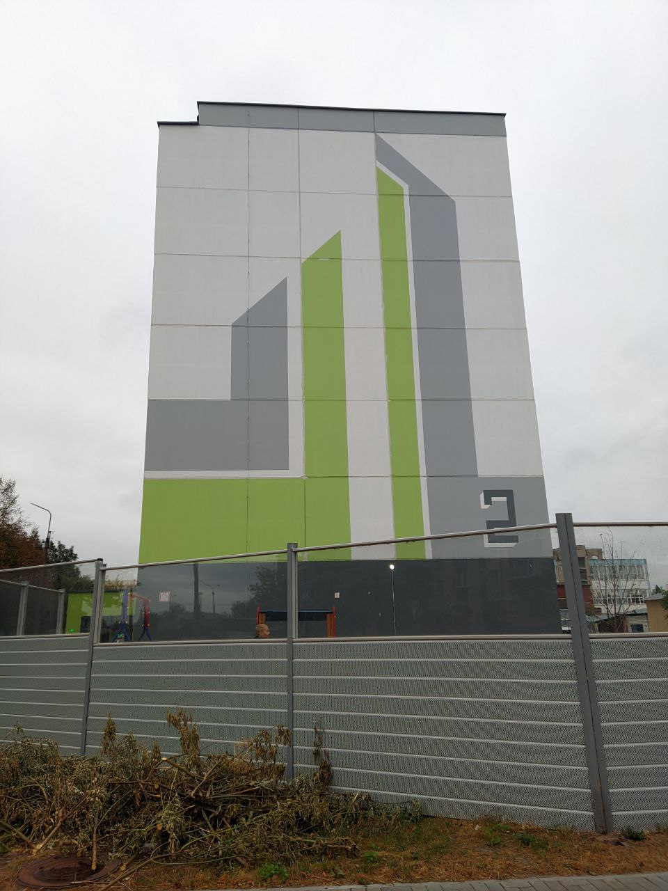
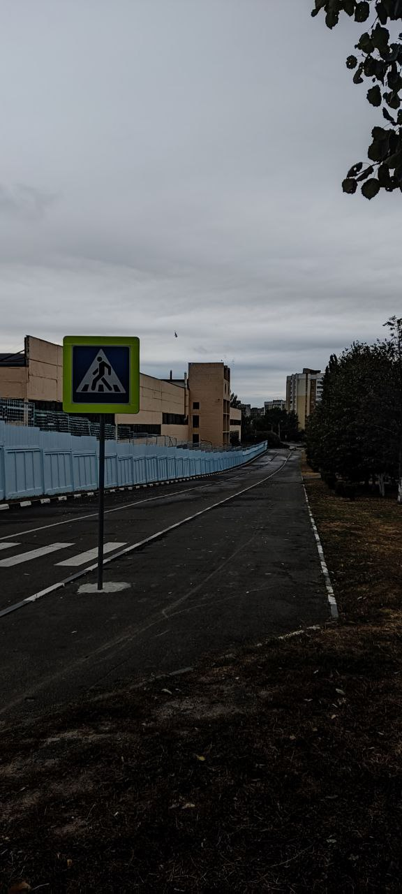
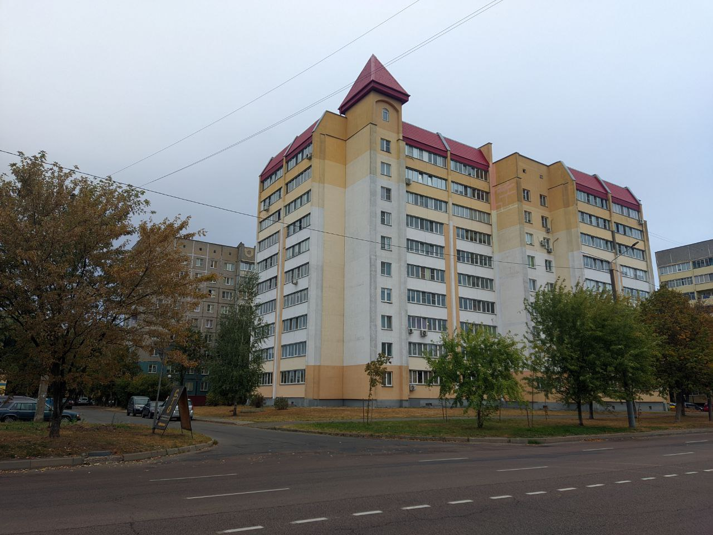
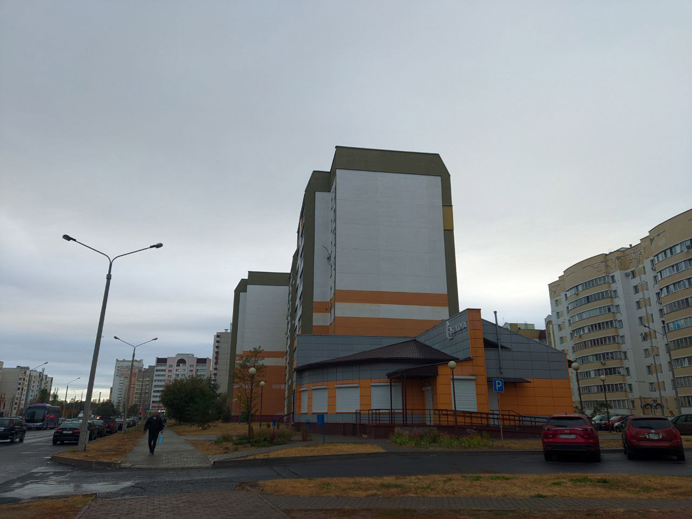
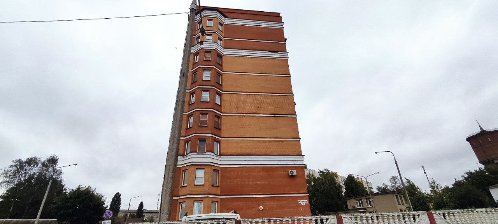
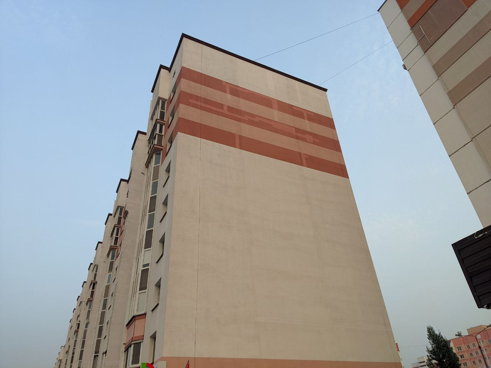
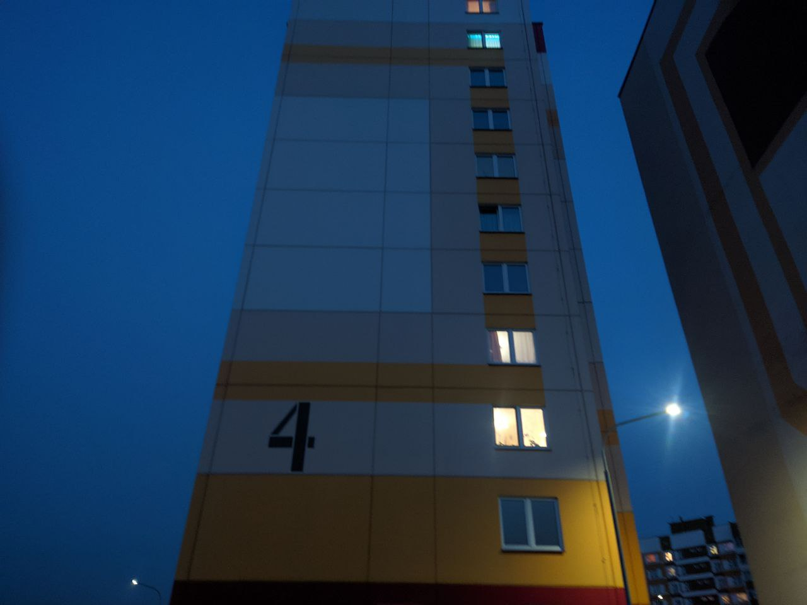

×

У Гомелі больш за 50 вуліц носяць імёны герояў, чые подзвігі назаўжды ўпісаны ў гісторыю, але толькі каля дзесяці з іх упрыгожаны мураламі. Але кожная з гэтых вуліц магла б ажыць дзякуючы мастацтву, дзе яркія пано на сценах распавялі б гісторыі пра смеласць і гераізм, ператвараючы горад у жывую галерэю пад адкрытым небам. Таму ўяўляю вам карту і інтэрактыўную табліцу перспектыўных месцаў для новых муралаў.
| Фота месца | Адрас | Апісанне |
|---|---|---|
|  | вул. Жукава, 2 | Будынак размешчаны на скрыжаванні ажыўленых вуліц, што гарантуе пастаянны паток увагі да мурала. |
|  | вул. Фядосенка, 2 | Бакавы фасад гэтага будынка бачны з адной з цэнтральных вуліц горада, што робіць яго ідэальным для маштабнага мурала, які прыцягвае ўвагу вадзіцеляў. |
 |
вул. Савецкая, 136/2 (каля вул. Дынды) | Дом размешчаны на галоўнай вуліцы горада, і мурал стане часткай гарадской інфраструктуры, бачнай кожнаму мінаку. |
|  | вул. Антошкіна | Мурал на гэтай хаце будзе выдатна бачны з найблізкай чыгункі, ствараючы культурную атмасферу для якія праязджаюць. |
 |
вул. М.Г.Яфрэмава, 15А | Мурал тут будзе выдатна бачны з бліжэйшага аўтобуснага прыпынку, ажыўляючы звычайны дзень гараджан. |
 |
вул. Карастаянавай, 4 | Гэты дом стаіць у асяроддзі зеляніны, і мурал стане яркім кантрастам на фоне прыроднага пейзажа. |
 |
вул. Гарбатава, 35 | Мурал на гэтай хаце будзе гарманаваць з суседнімі будынкамі, ствараючы адзіную мастацкую кампазіцыю. |
|  | вул. Свірыдава, 1Г | Будынак знаходзіцца ў раёне з высокай шчыльнасцю забудовы, што зробіць мурал прыкметным з розных кропак. |
|  | вул. Мазурава, 59Г (каля вул.Галавацкага) | Будынак знаходзіцца побач з навучальнай установай, і мурал можа стаць крыніцай натхнення для школьнікаў. |
 |
вул. Барыкіна 167 (каля вул. Талаліхіна) | Вялікі пляц сцяны дазваляе размясціць буйную выяву, якое прыцягне ўвагу жыхароў суседніх хат. |
|  | вул. Тэлегена, 7 | Тарэц вышыннага будынка ў гэтым месцы ідэальна падыдзе для новага мурала, дзякуючы таму, што выява добра будзе відаць з цэнтральнай чыгункі. |
 |
вул. Братоў Лізюковых, 30А | Фасад дома накіраваны на дзіцячую пляцоўку, дзе мурал можа стаць часткай выхаваўчага працэсу для дзяцей. |
 |
вул. Рыгора Дзенісенка, 82 | Гэты дом знаходзіцца насупраць буйной транспартнай развязкі, і мурал будзе замецены для ўсіх, якія праязджаюць міма. |
|  | вул. Д.Н.Пенязькова, 21 | Дом размешчаны ў жылым квартале, і мурал ажывіць прастору, ствараючы культурную атмасферу для мясцовых жыхароў. |
 |
вул. Белага, 52 (каля вул. І.Я.Каленікава) | Фасад будынка бачны з мясцовага веласіпеднага маршруту, і мурал прыцягне ўвагу актыўных гараджан. |
|  | вул. Воськіна, 4 | Будынак размешчана каля ўваходу ў спальны раён, і мурал стане своеасаблівай "візітнай карткай" гэтага месца. |
 |
вул. Склязнёва, 4 | Тарэц дома выходзіць на праезную частку, дзе штодзень вялікі трафік аўтамабіляў, якія едуць з-за горада, гарантуе пастаянную бачнасць мурала. |
 |
вул. Герцэна, 8 (каля вул. Шандалава) | Будынак размешчаны насупраць папулярнага кафэ і кінатэатра, таму мурал будзе замецены наведвальнікам, якія сядзяць на летніх тэрасах. |